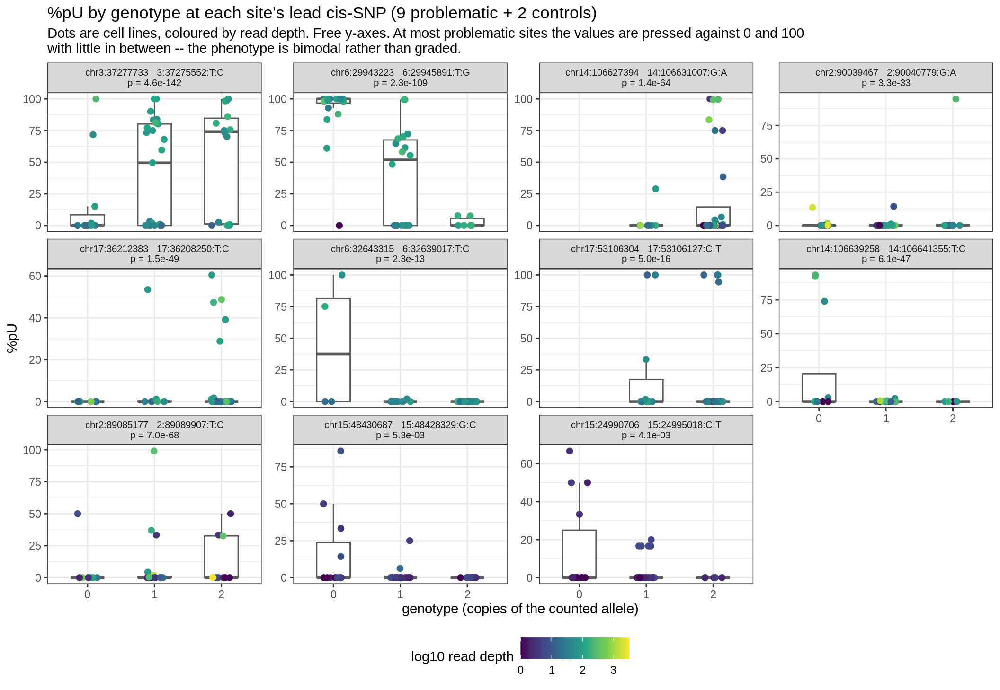
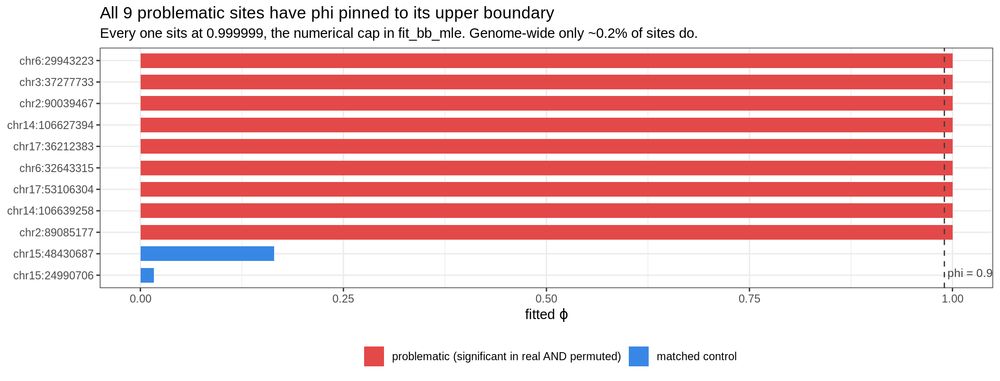
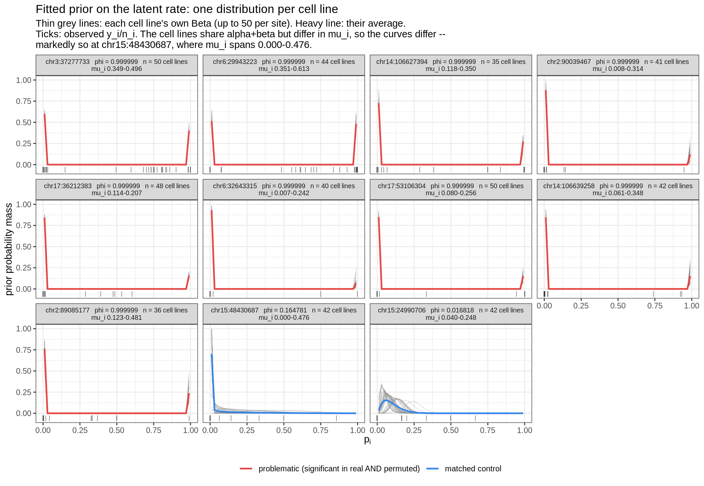

Last updated: 2026-08-30
Checks: 6 1
Knit directory: pumseq/
This reproducible R Markdown analysis was created with workflowr (version 1.7.0). The Checks tab describes the reproducibility checks that were applied when the results were created. The Past versions tab lists the development history.
The R Markdown file has unstaged changes. To know which version of
the R Markdown file created these results, you’ll want to first commit
it to the Git repo. If you’re still working on the analysis, you can
ignore this warning. When you’re finished, you can run
wflow_publish to commit the R Markdown file and build the
HTML.
Great job! The global environment was empty. Objects defined in the global environment can affect the analysis in your R Markdown file in unknown ways. For reproduciblity it’s best to always run the code in an empty environment.
The command set.seed(20260202) was run prior to running
the code in the R Markdown file. Setting a seed ensures that any results
that rely on randomness, e.g. subsampling or permutations, are
reproducible.
Great job! Recording the operating system, R version, and package versions is critical for reproducibility.
Nice! There were no cached chunks for this analysis, so you can be confident that you successfully produced the results during this run.
Great job! Using relative paths to the files within your workflowr project makes it easier to run your code on other machines.
Great! You are using Git for version control. Tracking code development and connecting the code version to the results is critical for reproducibility.
The results in this page were generated with repository version 27a3e46. See the Past versions tab to see a history of the changes made to the R Markdown and HTML files.
Note that you need to be careful to ensure that all relevant files for
the analysis have been committed to Git prior to generating the results
(you can use wflow_publish or
wflow_git_commit). workflowr only checks the R Markdown
file, but you know if there are other scripts or data files that it
depends on. Below is the status of the Git repository when the results
were generated:
Ignored files:
Ignored: analysis/qtl_mapping_summary_cache/
Unstaged changes:
Modified: analysis/qtl_mapping_betabinomial_problematic_diagnosis.Rmd
Note that any generated files, e.g. HTML, png, CSS, etc., are not included in this status report because it is ok for generated content to have uncommitted changes.
These are the previous versions of the repository in which changes were
made to the R Markdown
(analysis/qtl_mapping_betabinomial_problematic_diagnosis.Rmd)
and HTML
(docs/qtl_mapping_betabinomial_problematic_diagnosis.html)
files. If you’ve configured a remote Git repository (see
?wflow_git_remote), click on the hyperlinks in the table
below to view the files as they were in that past version.
| File | Version | Author | Date | Message |
|---|---|---|---|---|
| Rmd | 27a3e46 | XSun | 2026-08-29 | update |
| html | 27a3e46 | XSun | 2026-08-29 | update |
suppressMessages({ library(data.table); library(ggplot2) })
knitr::opts_chunk$set(echo = TRUE, warning = FALSE, message = FALSE,
fig.align = "center", fig.width = 11)
PSI <- "/project/xinhe/xsun/pumseq/pumseq_processed/psi_qtl"
PC <- file.path(PSI, "qtl_betabinomial/prior_pi_cases")
DIAG <- file.path(PSI, "qtl_betabinomial/diagnostic_figures")
par <- fread(file.path(PC, "case_params_patho.tsv"), sep = "\t")
bins <- fread(file.path(PC, "prior_bins_patho.tsv"), sep = "\t")
obs <- fread(file.path(PC, "observed_patho.tsv"), sep = "\t")
# sid contains a space, so the separator must be explicit
pl <- fread(file.path(DIAG, "pathological_sites_w5kb_pc3_auto_noUCcalled.txt"), sep = "\t")
GRP <- c("problematic (significant in real AND permuted)", "matched control")
for (d in list(par, bins, obs)) d[, group := factor(group, levels = GRP)]
NPROB <- par[group == GRP[1], .N]
NCTRL <- par[group == GRP[2], .N]
PHI_CUT <- 0.99
ord <- par[order(group, -phi)]$sid
for (d in list(par, bins, obs)) d[, sidf := factor(sid, levels = ord)]Definition. A site is problematic if it returns an extreme p-value in the permuted data as well as the real data. Permutation destroys any genotype–phenotype relationship, so a site that stays extreme there is not reporting association — it is reporting something about its own phenotype distribution that the test mistakes for signal. Selection is made on the permuted scans only, which keeps the look at the real data non-circular:
Configuration. ±5 kb windows, k = 3 covariate PCs,
chr1–22 only, phenotype fold5_union_auto_noUCcalled —
U/C-variant sites already excluded (1,118 of 11,856), φ-boundary sites
deliberately retained so they can be examined here.
There are 9 problematic sites out of 10,045 tested.
2 well-behaved sites, matched on covered cell lines and pooled %pU, are carried through every panel below for contrast.
knitr::kable(pl[, .(
site = paste0("chr", sub(" ", ":", sid)),
`real -log10 p` = round(real, 1),
`permuted, mean` = round(perm_mean, 1),
`permuted, sd` = round(perm_sd, 2),
`real minus worst permuted` = round(real_excess_over_perm_max, 2),
`covered cell lines` = NA_integer_,
`median depth` = median_depth_covered,
`pooled %pU` = round(100 * pooled_pu, 1))][
, `covered cell lines` := par$n_cl[match(pl$sid, par$sid)]][],
caption = "The signature: the real and permuted p-values are essentially identical. For 6 of the 9 the real scan is no more extreme than the WORST permutation (negative last column), i.e. shuffling the phenotype cost nothing at all.")| site | real -log10 p | permuted, mean | permuted, sd | real minus worst permuted | covered cell lines | median depth | pooled %pU |
|---|---|---|---|---|---|---|---|
| chr3:37277733 | 141.3 | 141.6 | 0.64 | -1.25 | 50 | 76 | 53.4 |
| chr6:29943223 | 108.6 | 103.9 | 0.41 | 4.22 | 44 | 87 | 57.9 |
| chr2:89085177 | 67.2 | 66.4 | 0.35 | 0.42 | 36 | 9 | 6.3 |
| chr14:106627394 | 64.1 | 64.5 | 0.51 | -0.89 | 35 | 20 | 27.5 |
| chr17:36212383 | 48.8 | 49.2 | 0.42 | -0.97 | 48 | 65 | 8.4 |
| chr14:106639258 | 46.2 | 44.2 | 0.75 | 0.67 | 42 | 39 | 6.7 |
| chr2:90039467 | 32.5 | 32.8 | 0.28 | -0.59 | 41 | 40 | 4.5 |
| chr17:53106304 | 15.3 | 15.0 | 0.20 | -0.03 | 50 | 28 | 7.0 |
| chr6:32643315 | 12.6 | 12.2 | 0.57 | -0.08 | 40 | 41 | 8.8 |
The last column is the point. If these were genuine associations, permuting the phenotype would destroy them and the real value would tower over the permuted ones. Instead the real and permuted values agree to within a fraction of a log unit, and for 6 of the 9 sites the real scan is less extreme than the worst permutation.
o <- obs[!is.na(geno)]
o[, gf := factor(geno, levels = c(0, 1, 2))]
lab <- unique(o[, .(sidf, group, lead_snp, lead_p)])
lab[, panel := sprintf("chr%s %s\np = %.1e", sub(" ", ":", sidf), lead_snp, lead_p)]
o <- merge(o, lab[, .(sidf, panel)], by = "sidf")
o[, panel := factor(panel, levels = lab[order(match(sidf, ord))]$panel)]
ggplot(o, aes(gf, 100 * pu)) +
geom_boxplot(width = 0.5, outlier.shape = NA, colour = "grey35") +
geom_jitter(aes(colour = log10(n)), width = 0.15, height = 0, size = 1.9) +
scale_colour_viridis_c(option = "D", name = "log10 read depth") +
facet_wrap(~ panel, ncol = 4, scales = "free_y") +
labs(x = "genotype (copies of the counted allele)", y = "%pU",
title = sprintf("%%pU by genotype at each site's lead cis-SNP (%d problematic + %d controls)",
NPROB, NCTRL),
subtitle = paste("Dots are cell lines, coloured by read depth. Free y-axes.",
"At most problematic sites the values are pressed against 0 and 100",
"\nwith little in between -- the phenotype is bimodal rather than graded.")) +
theme_bw(base_size = 11) +
theme(legend.position = "bottom", strip.text = element_text(size = 7.6))
| Version | Author | Date |
|---|---|---|
| 27a3e46 | XSun | 2026-08-29 |
knitr::kable(obs[, .(
site = paste0("chr", sub(" ", ":", sid[1])),
group = as.character(group[1]),
`cell lines` = .N,
`frac %pU = 0` = sprintf("%.2f", mean(pu == 0)),
`frac %pU > 0.9` = sprintf("%.2f", mean(pu > 0.9)),
`frac in 0.1-0.9` = sprintf("%.2f", mean(pu >= 0.1 & pu <= 0.9)),
`median depth` = as.numeric(median(n))), by = sidf][
order(match(sidf, ord))][, -1],
caption = "The same thing numerically: how much of each site's %pU distribution sits at the extremes versus in the middle.")| site | group | cell lines | frac %pU = 0 | frac %pU > 0.9 | frac in 0.1-0.9 | median depth |
|---|---|---|---|---|---|---|
| chr3:37277733 | problematic (significant in real AND permuted) | 50 | 0.38 | 0.14 | 0.36 | 76.0 |
| chr6:29943223 | problematic (significant in real AND permuted) | 44 | 0.30 | 0.41 | 0.25 | 87.0 |
| chr14:106627394 | problematic (significant in real AND permuted) | 35 | 0.63 | 0.09 | 0.14 | 20.0 |
| chr2:90039467 | problematic (significant in real AND permuted) | 41 | 0.85 | 0.02 | 0.05 | 40.0 |
| chr17:36212383 | problematic (significant in real AND permuted) | 48 | 0.81 | 0.00 | 0.12 | 65.0 |
| chr6:32643315 | problematic (significant in real AND permuted) | 40 | 0.93 | 0.03 | 0.03 | 41.0 |
| chr17:53106304 | problematic (significant in real AND permuted) | 50 | 0.84 | 0.12 | 0.02 | 28.0 |
| chr14:106639258 | problematic (significant in real AND permuted) | 42 | 0.81 | 0.05 | 0.02 | 39.0 |
| chr2:89085177 | problematic (significant in real AND permuted) | 36 | 0.67 | 0.03 | 0.17 | 9.0 |
| chr15:48430687 | matched control | 42 | 0.86 | 0.00 | 0.12 | 3.0 |
| chr15:24990706 | matched control | 42 | 0.79 | 0.00 | 0.21 | 2.5 |
knitr::kable(par[order(match(sid, ord)), .(
site = paste0("chr", sub(" ", ":", sid)),
group = as.character(group),
`cell lines` = n_cl,
`phi (real)` = sprintf("%.6f", phi),
`phi (perm 1)` = sprintf("%.6f", phi_perm1),
`phi (perm 2)` = sprintf("%.6f", phi_perm2),
`max |difference|` = signif(max_abs_phi_diff, 2),
`alpha+beta` = signif(alpha_plus_beta, 3),
`phi, intercept-only` = sprintf("%.6f", phi_intercept_only))],
caption = "phi under the real data and under the calibration's first two permutation orders. The three columns are IDENTICAL -- see below.")| site | group | cell lines | phi (real) | phi (perm 1) | phi (perm 2) | max |difference| | alpha+beta | phi, intercept-only |
|---|---|---|---|---|---|---|---|---|
| chr3:37277733 | problematic (significant in real AND permuted) | 50 | 0.999999 | 0.999999 | 0.999999 | 0 | 1.00e-06 | 0.999999 |
| chr6:29943223 | problematic (significant in real AND permuted) | 44 | 0.999999 | 0.999999 | 0.999999 | 0 | 1.00e-06 | 0.999999 |
| chr14:106627394 | problematic (significant in real AND permuted) | 35 | 0.999999 | 0.999999 | 0.999999 | 0 | 1.00e-06 | 0.999999 |
| chr2:90039467 | problematic (significant in real AND permuted) | 41 | 0.999999 | 0.999999 | 0.999999 | 0 | 1.00e-06 | 0.999999 |
| chr17:36212383 | problematic (significant in real AND permuted) | 48 | 0.999999 | 0.999999 | 0.999999 | 0 | 1.00e-06 | 0.510371 |
| chr6:32643315 | problematic (significant in real AND permuted) | 40 | 0.999999 | 0.999999 | 0.999999 | 0 | 1.00e-06 | 0.859218 |
| chr17:53106304 | problematic (significant in real AND permuted) | 50 | 0.999999 | 0.999999 | 0.999999 | 0 | 1.00e-06 | 0.924642 |
| chr14:106639258 | problematic (significant in real AND permuted) | 42 | 0.999999 | 0.999999 | 0.999999 | 0 | 1.00e-06 | 0.999999 |
| chr2:89085177 | problematic (significant in real AND permuted) | 36 | 0.999999 | 0.999999 | 0.999999 | 0 | 1.00e-06 | 0.999999 |
| chr15:48430687 | matched control | 42 | 0.164781 | 0.164781 | 0.164781 | 0 | 5.07e+00 | 0.297790 |
| chr15:24990706 | matched control | 42 | 0.016818 | 0.016818 | 0.016818 | 0 | 5.85e+01 | 0.036466 |
The permutation columns above are not approximately equal, they are equal: the largest difference across all 11 sites and both permutations is 2e-11, i.e. optimiser noise.
This is forced, not coincidental. The calibration permutes the
phenotype and the covariates by the same index while
leaving genotype fixed
(y <- Cm[s, ord]; n <- Nm[s, ord]; Xcov_p <- Xcov[ord, ]).
The null log-likelihood is a product over cell lines of terms in \((y_i, n_i, z_i)\), so permuting all three
together merely reorders the factors of a product:
\[\ell_0(\hat\beta_0, \hat\gamma, \hat\varphi) = \sum_i \log f(y_i \mid n_i, z_i) \quad\text{is unchanged by any relabelling of } i\]
So the MLE is unchanged, \(\hat\varphi\) is unchanged, and the set of 50 \((\mu_i, \alpha_i, \beta_i)\) is unchanged — only which cell line carries which value moves. The degenerate null fit is mathematically immune to permutation.
Identical: the null fit — \(\hat\varphi\), \(\hat\ell_0\), and the 50 Betas.
Not identical: the LRT p-values. The full model contains genotype, which is not permuted, so only the full-model term moves:
knitr::kable(pl[, .(
site = paste0("chr", sub(" ", ":", sid)),
`real -log10 p` = round(real, 2),
`perm 1` = round(perm1, 2), `perm 2` = round(perm2, 2),
spread = round(pmax(real, perm1, perm2) - pmin(real, perm1, perm2), 2))],
caption = "The p-values DO change under permutation -- just not meaningfully. A genuine QTL at -log10 p = 141 would collapse to about 2 when the phenotype is shuffled; these move by 1-5 out of 141.")| site | real -log10 p | perm 1 | perm 2 | spread |
|---|---|---|---|---|
| chr3:37277733 | 141.33 | 142.59 | 141.86 | 1.25 |
| chr6:29943223 | 108.63 | 104.42 | 103.52 | 5.11 |
| chr2:89085177 | 67.15 | 66.52 | 66.73 | 0.64 |
| chr14:106627394 | 64.15 | 64.36 | 63.78 | 0.58 |
| chr17:36212383 | 48.82 | 49.18 | 48.94 | 0.36 |
| chr14:106639258 | 46.22 | 45.55 | 43.73 | 2.48 |
| chr2:90039467 | 32.48 | 32.56 | 32.73 | 0.25 |
| chr17:53106304 | 15.30 | 14.95 | 14.91 | 0.39 |
| chr6:32643315 | 12.65 | 11.68 | 11.46 | 1.18 |
The mechanism follows. The statistic is \(\Lambda = 2(\hat\ell_{\text{full}} -
\hat\ell_0)\), and permutation freezes \(\hat\ell_0\). It is free to change \(\hat\ell_{\text{full}}\) — but the null is
so poor (for chr3:37277733, \(\hat\ell_0 = -478\), with a prior that
contributes no regularisation at all) that almost any
genotype vector buys a large improvement over it. Which genotype pairs
with which phenotype barely matters. So \(\Lambda\) is measuring how far a full model
can climb above a broken null, not association — and shuffling the
phenotype does not repair the null.
ggplot(par, aes(reorder(paste0("chr", sub(" ", ":", sid)), phi), phi, fill = group)) +
geom_col(width = 0.68) +
geom_hline(yintercept = PHI_CUT, linetype = "dashed", colour = "grey25") +
annotate("text", x = 0.7, y = PHI_CUT, label = " phi = 0.99", hjust = 0, vjust = -0.6,
size = 3.2, colour = "grey25") +
scale_fill_manual(values = setNames(c("#e34948", "#3987e5"), GRP), name = NULL) +
coord_flip() +
labs(x = NULL, y = expression("fitted"~varphi),
title = sprintf("All %d problematic sites have phi pinned to its upper boundary", NPROB),
subtitle = sprintf("Every one sits at %.6f, the numerical cap in fit_bb_mle. Genome-wide only ~0.2%% of sites do.",
max(par$phi))) +
theme_bw(base_size = 11) + theme(legend.position = "bottom")
| Version | Author | Date |
|---|---|---|
| 27a3e46 | XSun | 2026-08-29 |
9 of 9 problematic sites have φ > 0.99 — in fact every one is at 0.999999, the numerical cap. This is not a threshold that was tuned to catch them; genome-wide only about 0.2% of sites reach it.
Note the intercept-only column: at 3 of the sites φ is
well below the boundary when the covariates are dropped (0.51, 0.86,
0.92), so at those the PCs are part of what drives the fit onto the
boundary. At the other 6 it is at the cap either way.
\(p_i\) is cell line \(i\)’s true modification rate. It is latent — never observed — but the fitted null model states its whole distribution, and that distribution is what is plotted. It is obtained from the fit in three steps:
The same invariance applies here: refitting under permutations 1 and 2 leaves the binned prior mass unchanged to 6e-11, so the panels below are the permuted priors as well as the real ones — there is nothing separate to plot.
There are as many distributions as cell lines — up to 50 per site, not one. They share \(\alpha_i+\beta_i = (1-\hat\varphi)/\hat\varphi\), but \(\mu_i\) splits that total differently for each, so each cell line gets its own Beta. The figure therefore draws all of them: one thin line per cell line, with the heavy line their average. The ticks below are the observed \(y_i/n_i\), for reference.
# One Beta PER CELL LINE: alpha_i = mu_i*(1-phi)/phi, beta_i = (1-mu_i)*(1-phi)/phi.
# mu_i comes from observed.tsv (per cell line), phi from case_params (per site).
NB <- 50
brk <- seq(0, 1, length.out = NB + 1)
mid <- (head(brk, -1) + tail(brk, -1)) / 2
cl_bins <- merge(obs[, .(sid, cell_line, mu)], par[, .(sid, group, phi)], by = "sid")
cl_bins <- cl_bins[, {
ab <- (1 - phi) / phi
.(bin_mid = mid, mass = diff(pbeta(brk, mu * ab, (1 - mu) * ab)))
}, by = .(sid, group, cell_line)]
avg <- cl_bins[, .(mass = mean(mass)), by = .(sid, group, bin_mid)]
labp <- par[, .(sid, panel = sprintf("chr%s phi = %.6f n = %d cell lines\nmu_i %.3f-%.3f",
sub(" ", ":", sid), phi, n_cl, mu_min, mu_max))]
for (d in list(cl_bins, avg)) d[, panel := labp$panel[match(sid, labp$sid)]]
LV <- labp[order(match(sid, ord))]$panel
for (d in list(cl_bins, avg)) d[, panel := factor(panel, levels = LV)]
ob <- obs[, .(sid, pu)][, panel := factor(labp$panel[match(sid, labp$sid)], levels = LV)]
ggplot(cl_bins, aes(bin_mid, mass)) +
geom_line(aes(group = cell_line), colour = "grey55", linewidth = 0.18, alpha = 0.5) +
geom_line(data = avg, aes(colour = group), linewidth = 0.9) +
geom_point(data = ob, aes(x = pu, y = -0.06), shape = 124, size = 2, colour = "grey15",
alpha = 0.7) +
scale_colour_manual(values = setNames(c("#e34948", "#3987e5"), GRP), name = NULL) +
facet_wrap(~ panel, ncol = 4) +
labs(x = expression(p[i]), y = "prior probability mass",
title = "Fitted prior on the latent rate: one distribution per cell line",
subtitle = paste("Thin grey lines: each cell line's own Beta (up to 50 per site).",
"Heavy line: their average.\nTicks: observed y_i/n_i.",
"The cell lines share alpha+beta but differ in mu_i, so the curves differ --",
"\nmarkedly so at chr15:48430687, where mu_i spans 0.000-0.476.")) +
theme_bw(base_size = 11) +
theme(legend.position = "bottom", strip.text = element_text(size = 7.4))
| Version | Author | Date |
|---|---|---|
| 27a3e46 | XSun | 2026-08-29 |
knitr::kable(par[order(match(sid, ord)), .(
site = paste0("chr", sub(" ", ":", sid)),
group = as.character(group),
alpha = signif(alpha_median, 3), beta = signif(beta_median, 3),
`mu_i range` = sprintf("%.3f - %.3f", mu_min, mu_max),
`P(p<0.01)` = round(P_below_0.01, 3),
`P(p>0.99)` = round(P_above_0.99, 3),
`both tails` = round(P_below_0.01 + P_above_0.99, 3),
`prior SD` = round(prior_sd_median, 3))],
caption = "At the problematic sites the two tail masses sum to 1.000 -- the prior has NO interior mass -- and the prior SD is ~0.35-0.50 against a maximum of 0.5 attainable on (0,1).")| site | group | alpha | beta | mu_i range | P(p<0.01) | P(p>0.99) | both tails | prior SD |
|---|---|---|---|---|---|---|---|---|
| chr3:37277733 | problematic (significant in real AND permuted) | 4.00e-07 | 6.00e-07 | 0.349 - 0.496 | 0.600 | 0.400 | 1.000 | 0.488 |
| chr6:29943223 | problematic (significant in real AND permuted) | 5.00e-07 | 5.00e-07 | 0.351 - 0.613 | 0.516 | 0.484 | 1.000 | 0.496 |
| chr14:106627394 | problematic (significant in real AND permuted) | 3.00e-07 | 7.00e-07 | 0.118 - 0.350 | 0.727 | 0.273 | 1.000 | 0.453 |
| chr2:90039467 | problematic (significant in real AND permuted) | 1.00e-07 | 9.00e-07 | 0.008 - 0.314 | 0.879 | 0.121 | 1.000 | 0.314 |
| chr17:36212383 | problematic (significant in real AND permuted) | 2.00e-07 | 8.00e-07 | 0.114 - 0.207 | 0.843 | 0.157 | 1.000 | 0.363 |
| chr6:32643315 | problematic (significant in real AND permuted) | 1.00e-07 | 9.00e-07 | 0.007 - 0.242 | 0.931 | 0.069 | 1.000 | 0.227 |
| chr17:53106304 | problematic (significant in real AND permuted) | 2.00e-07 | 8.00e-07 | 0.080 - 0.256 | 0.849 | 0.151 | 1.000 | 0.360 |
| chr14:106639258 | problematic (significant in real AND permuted) | 1.00e-07 | 9.00e-07 | 0.061 - 0.348 | 0.848 | 0.152 | 1.000 | 0.321 |
| chr2:89085177 | problematic (significant in real AND permuted) | 2.00e-07 | 8.00e-07 | 0.123 - 0.481 | 0.763 | 0.237 | 1.000 | 0.397 |
| chr15:48430687 | matched control | 3.66e-02 | 5.03e+00 | 0.000 - 0.476 | 0.671 | 0.000 | 0.671 | 0.034 |
| chr15:24990706 | matched control | 4.89e+00 | 5.36e+01 | 0.040 - 0.248 | 0.007 | 0.000 | 0.007 | 0.036 |
The two tail masses sum to 1.000 at every problematic site. The fitted prior places no probability anywhere between 0.01 and 0.99: the model asserts that each cell line’s true pU rate is either essentially 0 or essentially 1, with no intermediate stoichiometry possible.
sessionInfo()R version 4.2.0 (2022-04-22)
Platform: x86_64-pc-linux-gnu (64-bit)
Running under: CentOS Linux 8
Matrix products: default
BLAS/LAPACK: /software/openblas-0.3.13-el8-x86_64/lib/libopenblas_skylakexp-r0.3.13.so
locale:
[1] C
attached base packages:
[1] stats graphics grDevices utils datasets methods base
other attached packages:
[1] ggplot2_3.4.2 data.table_1.14.4 workflowr_1.7.0
loaded via a namespace (and not attached):
[1] Rcpp_1.0.11 highr_0.9 compiler_4.2.0 pillar_1.9.0
[5] bslib_0.3.1 later_1.3.0 git2r_0.30.1 jquerylib_0.1.4
[9] tools_4.2.0 getPass_0.2-2 digest_0.6.29 viridisLite_0.4.0
[13] gtable_0.3.0 jsonlite_1.8.7 evaluate_0.15 lifecycle_1.0.4
[17] tibble_3.2.1 pkgconfig_2.0.3 rlang_1.1.2 cli_3.6.2
[21] rstudioapi_0.14 yaml_2.3.5 xfun_0.38 fastmap_1.1.0
[25] withr_2.5.0 dplyr_1.1.2 httr_1.4.5 stringr_1.5.0
[29] knitr_1.42 generics_0.1.3 sass_0.4.1 fs_1.5.2
[33] vctrs_0.6.1 tidyselect_1.2.0 grid_4.2.0 rprojroot_2.0.3
[37] glue_1.6.2 R6_2.5.1 processx_3.5.3 fansi_1.0.3
[41] rmarkdown_2.21 farver_2.1.0 callr_3.7.0 magrittr_2.0.3
[45] whisker_0.4 scales_1.2.0 ps_1.7.0 promises_1.2.0.1
[49] htmltools_0.5.7 colorspace_2.0-3 httpuv_1.6.5 labeling_0.4.2
[53] utf8_1.2.2 stringi_1.7.6 munsell_0.5.0